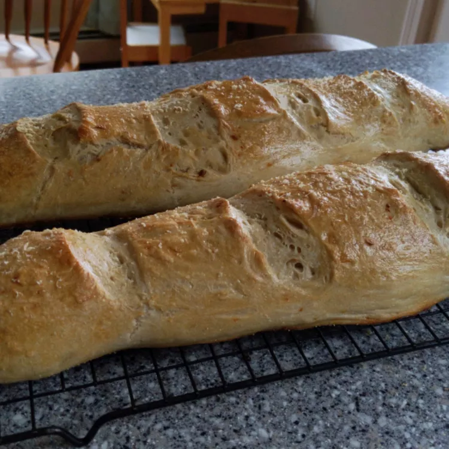

French Bread

Warm French Bread Recipe!
This French bread recipe yields hot, fresh loaves with a crisp, crunchy crust and slightly chewy center. This bread is as traditional as the bread served in France.
Ingredients
- 1 tablespoon cornmeal
- 6 cups all-purpose flour
- 2 ½ (.25 ounce) packages active dry yeast
- 1 ½ teaspoons salt
- 2 cups warm water (110 degrees F/45 degrees C)
- 1 egg white
- 1 tablespoon water
Cooking Instructions
- Grease a large baking sheet and sprinkle with cornmeal. Set aside.
- Combine 2 cups flour, yeast, and salt in the bowl of a stand mixer. Stir in 2 cups warm water; beat with the dough hook attachment until blended. Continue adding remaining flour, a little at a time, until incorporated.
- Knead dough on a lightly floured surface until smooth and elastic, 8 to 10 minutes. Shape into a ball, place in a greased bowl, and turn once. Cover and let rise in a warm place until doubled in size, about 1 hour.
- Punch dough down and divide in half. Turn out onto a lightly floured surface. Cover and let rest for 10 minutes.
- Roll each half into a large rectangle. Roll up, starting from a long side. Moisten edge with water and seal. Taper ends.
- Place loaves, seam-side down, on the prepared baking sheet. Lightly beat egg white with 1 tablespoon water and brush over loaves. Cover with a damp cloth and let rise until nearly doubled, 35 to 40 minutes.
- Preheat the oven to 375 degrees F (190 degrees C).
- Use a sharp knife to make 3 or 4 diagonal cuts, about 1/4-inch deep, across top of each loaf. Bake in the preheated oven for 20 minutes. Brush loaves with egg white mixture. Continue baking until an instant-read thermometer inserted into the center reads 190 degrees F (88 degrees C) or loaves sound hollow when tapped, 15 to 20 minutes more. If necessary, cover loosely with foil to prevent over-browning.
- Remove loaves from the baking sheet and cool on a wire rack.